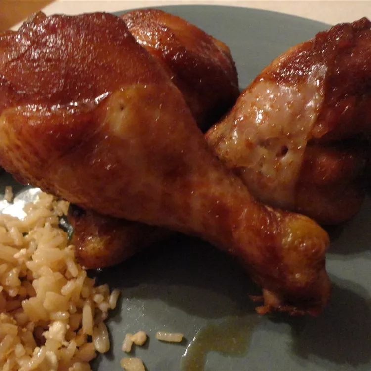

Delicious Chicken Teriyaki

This recipe will show you how to make a very easy and very tasty chicken!
We will show you how to get a nice and rich flavor, which works wonders for something other than chicken as well!
Ingredients
- 1 whole chicken, cut in half
- ¾ cup of granulated sugar
- ¾ cup of soy sauce
- 1 tablespoon of grated fresh ginger
- 2 cloves of minced garlic
Cooking instructions
- Rinse chicken halves and pat dry with paper towel. Place the chicken cut side down in a 9x13 inch baking dish.
- In a mixing bowl, combine sugar, soy sauce, grated ginger and minced garlic. Mix it well and pour the mixture over the chicken.
- Cover and refrigerate for 3 hours.
- Preheat oven to 350 degrees F (175 degrees C).
- Bake the chicken uncovered, in a preheated oven for 1 hour. Remember to baste the chicken frequently.
- Test for doneness and make sure there's no pink inside of the chicken. Once done, take it out and let it cool for 10 minutes. Cut in to smaller pieces and enjoy.